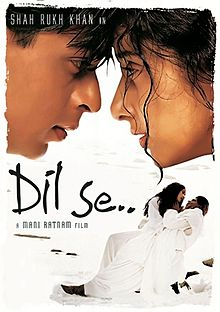

SRK MANIA
Home
Songs
Movies

Dil Se.. (1998)
Label: Venus Worldwide Entertainment
Aae Ajnabi -
Download
Satrangi Re -
Download
Chaiyan Chaiyan -
Download
Dil Se Re -
Download
Jiya Jale -
Download
Thayya Thayya -
Download